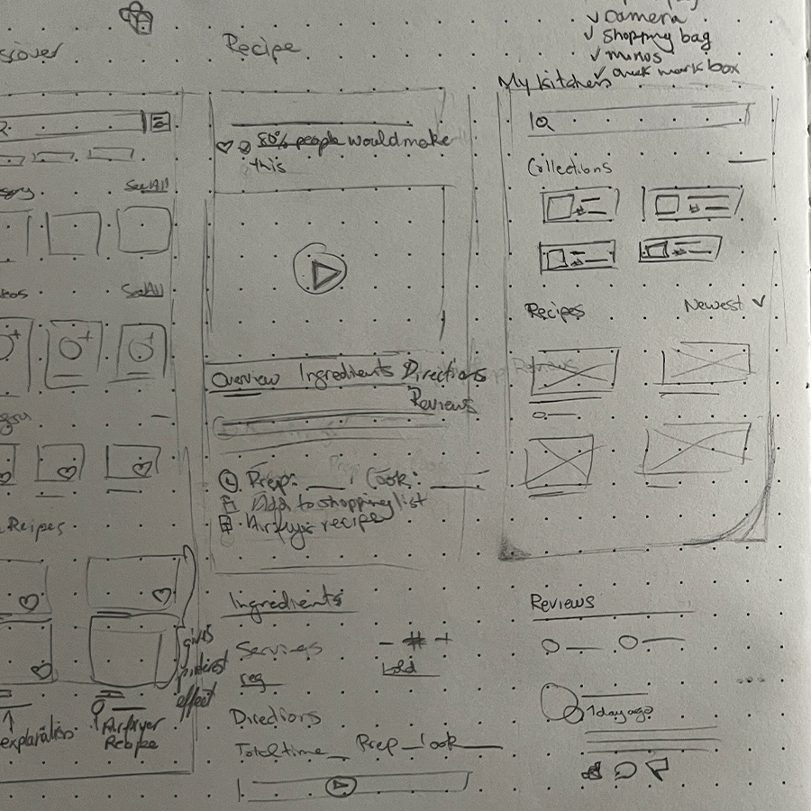
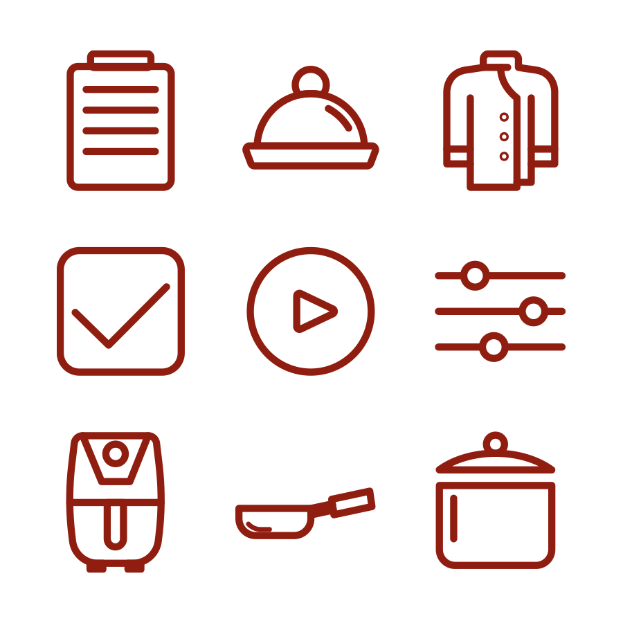
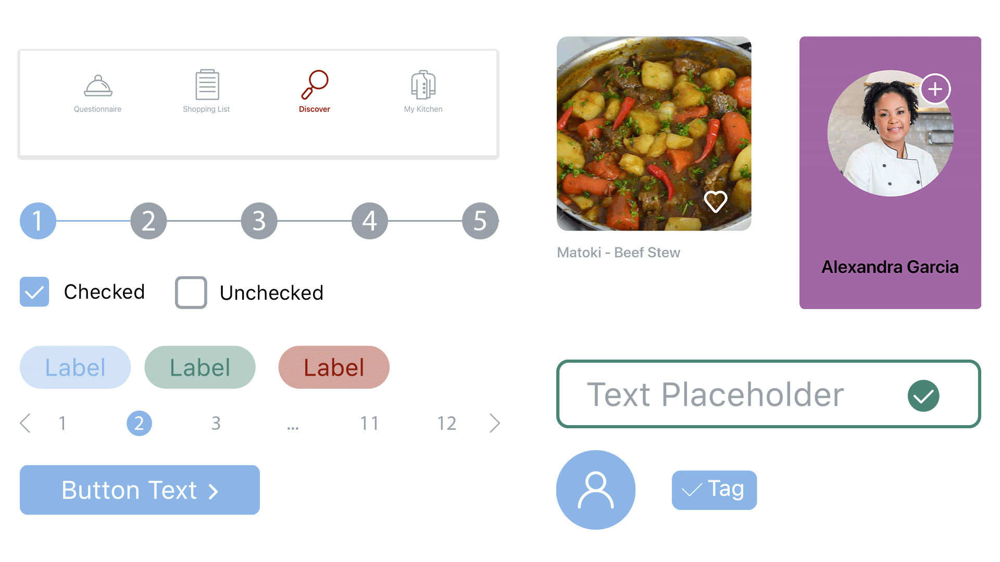

Client
Fork & Spoon
Role
Product Design
Project Type
Mobile App
Date
5 Months
The Objective
The objective of Fork and Spoon is to create an intuitive cooking platform that helps users discover diverse and reliable recipes from around the world, access healthy and diet-specific options, prepare quick meals even on busy days, plan and execute efficient meal prep, and receive personalized recipe recommendations tailored to their preferences and lifestyle.
The Process





83%
Users Have Dietary Restrictions or Allergies
A significant majority of users reported specific dietary needs. This validated the need for advanced filtering (vegetarian, halal, gluten-free, etc.) and personalized recipe recommendations as a core feature — not an add-on.
61%
Increased Sign-Up Completion Rate
Users are comfortable managing groceries digitally, validating the need for an integrated grocery list feature synced directly with saved recipes and meal plans.
77%
Own an Air Fryer
A surprisingly high percentage of users own air fryers. This insight supported the introduction of appliance-specific filters and air-fryer recipe categories to meet modern cooking behaviors.
To explore the process in more detail, visit my Behance page.
The research revealed that users are not simply looking for more recipes but are seeking structure, personalisation, and guided support throughout the cooking process. With a high percentage reporting dietary restrictions, advanced filtering and tailored recommendations became essential. The strong preference for both video and step by step instructions highlighted the need for a blended learning experience, while the lack of weekly meal planning pointed to significant decision fatigue. Additionally, users prioritise convenience and speed, valuing quick meals, built in timers, and appliance specific content. Overall, the opportunity lies in creating a solution that reduces friction and supports confident and efficient cooking.



"Fork and Spoon has completely transformed how I cook at home. The app is easy to navigate, even for someone like me who isn’t very tech-savvy, and it makes discovering new recipes and planning meals effortless and enjoyable."
Harold
The Brief
Business & User Goals
To create a highly engaging cooking platform that increases retention through personalisation, encourages repeat usage via meal planning tools, and differentiates itself through structured guidance rather than just recipe volume.
Users want to:
- Reduce the stress of deciding what to cook
- Maintain dietary preferences without extensive searching
- Cook efficiently, even with limited time
- Feel confident trying new recipes
The app was designed to remove friction in meal discovery and preparation, empowering users to cook smarter, not harder.
The Process
I conducted the research in three phases:
User Surveys: TCollected quantitative data to understand demographics, cooking habits, dietary needs, and feature expectations.
Behavioural Analysis: Analysed how users currently manage grocery lists and meal planning to identify integration opportunities.
Competitive Review: Reviewed existing cooking apps to identify gaps in personalisation, appliance-specific content, and structured meal prep guidance.
Major Revelations
The biggest revelation was that the problem wasn’t lack of recipes — it was lack of structure and personalisation.
Users don’t struggle to find food content; they struggle to:
- Filter content effectively
- Plan meals in advance
- Align recipes with dietary needs
- Stay consistent throughout the week
This shifted the project direction from a “recipe discovery app” to a guided cooking and meal planning ecosystem.
How Did the Research Steer the Direction of the Project?
Research directly influenced several key product decisions:
- Introduced dietary-first onboarding personalisation
- Designed dual-format recipe guidance (video + step-by-step)
- Implemented weekly meal planner
- Integrated smart grocery list generation
- Added appliance filters (e.g., Air Fryer category)
- Included built-in cooking timers
The design moved from content-heavy to decision-support focused.
Time, Struggles & Lessons
If given more time, I would have conducted usability testing on the meal planning flow to further refine friction points. Personalisation logic could also be expanded through AI-based recommendations.
A key challenge was avoiding feature overload. The research revealed strong demand for many tools, but adding everything at once risked cognitive overload. Prioritisation and structured information architecture became critical.
The biggest lesson learned: Clarity beats complexity. Even feature-rich products must feel simple at first interaction.
Final Thoughts
The final product evolved from a standard cooking app into a structured, personalised cooking companion. By grounding every major design decision in user research, the experience became intuitive, supportive, and aligned with real cooking behaviours.
Rather than just offering recipes, the platform empowers users to confidently discover, plan, shop, and cook to create a long-term engagement and meaningful value.